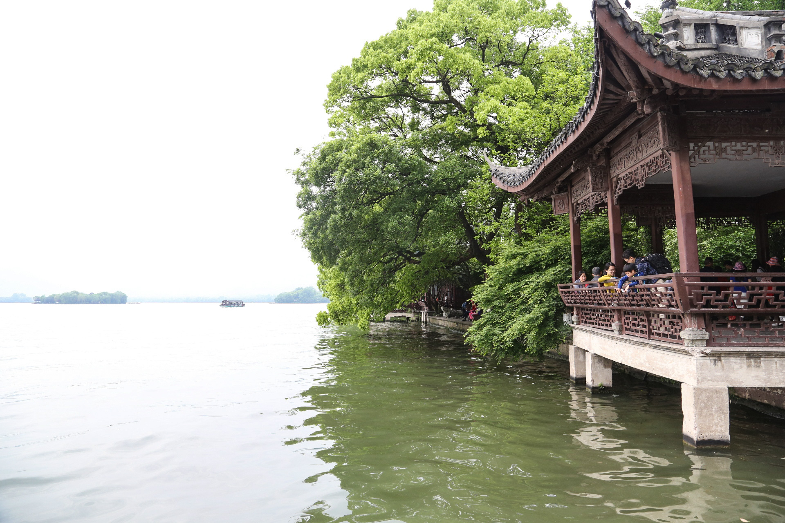

平湖秋月，西湖十景之一。南宋时，被列为西湖十景之三，元代又称之为“西湖夜月”而列入钱塘十景。
“平湖秋月”景观是指：每当清秋气爽，西湖湖面平静如镜，皎洁的秋月当空，月光与湖水交相辉映，颇有“一色湖光万顷秋”之感，故题名“平湖秋月”。
南宋题名之初以泛舟西湖、观赏秋夜月景为胜；清代康熙年间，康熙巡游西湖，品题“平湖秋月”景观，定孤山东南角的临湖水院为该景观的景址所在，沿用至今。
中国古代文人曾对观赏西湖胜景有过一段绝妙的评说，提出观赏西湖胜景，“晴天不如雨天，雨天不如月夜，月夜不如雪景”。因此，西湖景观的观赏特点之一是月夜观赏胜于白日。
不妨想象下观赏“平湖秋月”时的情景：充满了诗情画意的西湖秋月之夜，高阁凌波，倚窗俯水，平台宽广，视野开阔；秋夜在此纵目高眺远望，但见 皓月当空，湖天一碧，金风送爽，水月相融，置身于月光笼罩之中，产生身处月宫之上的幻境。精神层面上，以四季中最为平静清澄的秋季湖水和最为洁净 无瑕的秋夜明月景观为代表，象征追求人格高洁的审美精神。
构成“平湖秋月”景观的包括始建于清代康乾年间的水院空间、御书楼、碑亭、观景平台、曲桥、碑刻等建筑和构筑物遗存，荷花、垂柳、 西府海棠等传统植物，外湖水域及三岛、西湖环湖群山、孤山南麓等自然景观。
水院整体建于湖水中，由中部的长方形水池和四面环绕的建筑物构成。水池的北界即为湖岸，建有围墙；南界为御书楼；东界为东曲桥和御碑亭 西界为西曲桥和月波亭。
御书楼在水院南缘中部，坐北朝南，北面入口临水院，南、西、东三面临湖，为重檐歇山顶的两层木构建筑，楼面阔三间、外环檐廊、面湖开敞。 入口悬挂康熙御题的“平湖秋月”匾额。
御书楼与北面的湖岸之间以中部入口梁板桥和西、东侧各一座曲桥相连。楼南有架于湖面之上的长方形观景平台。
题刻“平湖秋月”景名的御碑是该题名景观的重要历史物证之一，位于水院东曲桥头，原碑为清康熙三十八年（1699年）康熙巡游西湖、品题“西湖十景”、御书“平湖秋月”景名所立，现碑为1980年按原尺度、原刻本、原字迹摹刻重立。 碑身正、背面均刻康熙帝1699年御题行书“平湖秋月”四字。御碑的保护性建筑御碑亭为清代风格的四角攒尖顶木构亭，面积15.21平方米，通高5.6米。
“平湖秋月”自始建至今，一直保持以湖中荷花、临水种植的西府海棠、桂花树，以及拂岸的垂柳为植物特色。每当秋季，水岸间呈现花影绰约、 绿柳飘拂的植被景观。